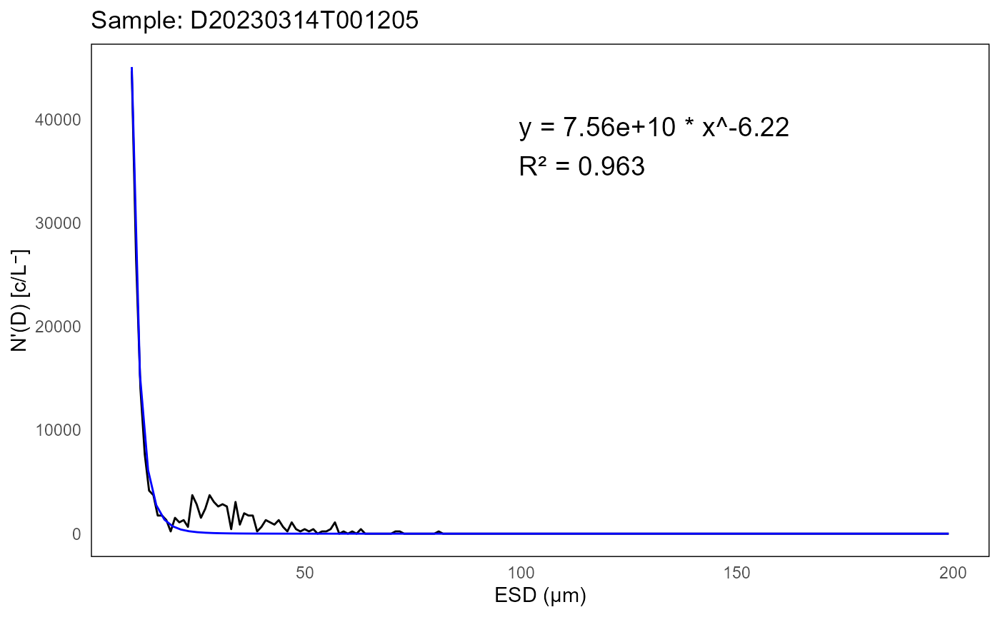
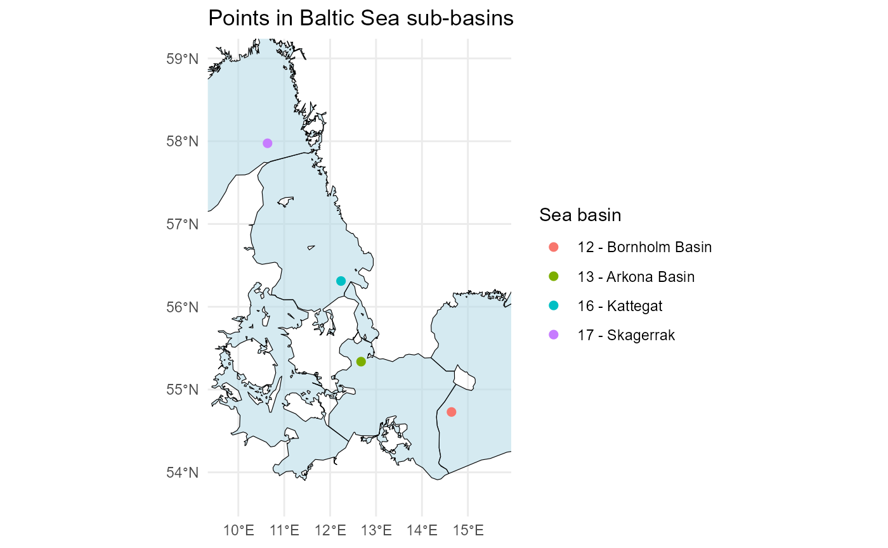
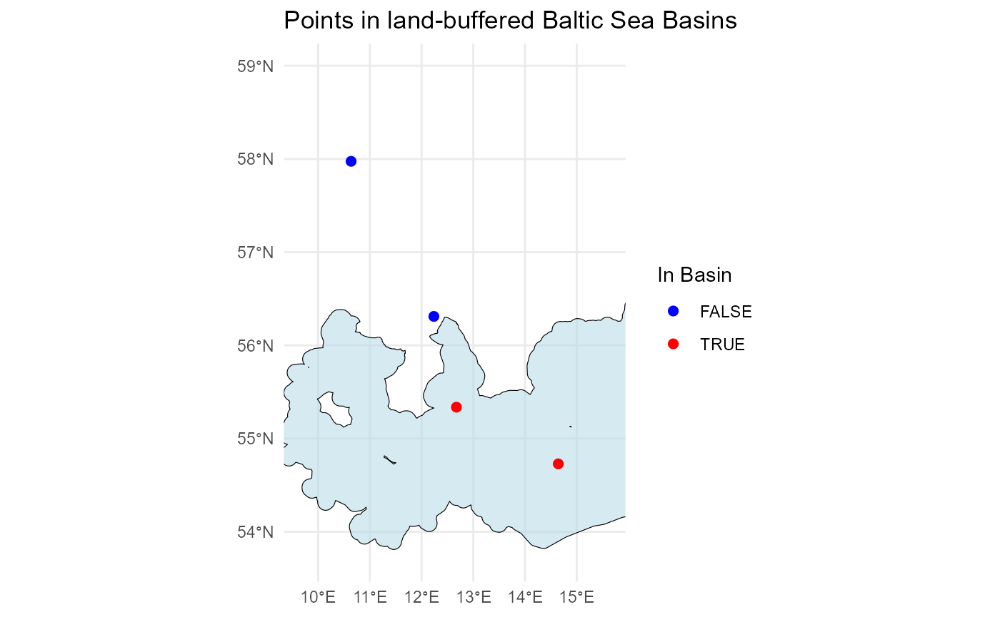

Tutorial
tutorial.RmdInstallation
You can install the package from GitHub using the
devtools package:
# install.packages("devtools")
devtools::install_github("EuropeanIFCBGroup/iRfcb",
dependencies = TRUE)Some functions in iRfcb require Python to
be installed (see in the sections below). You can download
Python from the official website: python.org/downloads.
Download Sample Data
To get started, download sample data from the SMHI IFCB Plankton image reference library with the following function:
# Download and extract test data in the data folder
ifcb_download_test_data(dest_dir = "data",
method = "auto")## Download and extraction complete.Run QC/QA Checks
Run Particle Size Distribution QC
IFCB data can be quality controlled by analyzing the particle size
distribution (PSD) (Hayashi et al. in prep). iRfcb uses the
code available at https://github.com/kudelalab/PSD.
Before running the PSD quality check, ensure the necessary Python
environment is set up and activated:
# Print output from PSD
head(psd$fits)## # A tibble: 6 × 8
## sample a k R.2 max_ESD_diff capture_percent bead_run humidity
## <chr> <dbl> <dbl> <dbl> <dbl> <dbl> <dbl> <dbl>
## 1 D20230314T… 7.56e10 -6.22 0.963 1 0.955 0 16.0
## 2 D20230314T… 2.44e11 -6.75 0.955 1 0.944 0 16.0
## 3 D20230314T… 6.14e11 -7.10 0.961 1 0.953 0 16.0
## 4 D20230315T… 2.22e 9 -4.84 0.972 0 0.978 0 16.2
## 5 D20230315T… 2.38e 9 -4.90 0.974 1 0.983 0 16.2
## 6 D20230315T… 4.17e 8 -4.18 0.973 1 0.979 0 16.2
head(psd$flags)## # A tibble: 6 × 2
## sample flag
## <chr> <chr>
## 1 D20230915T091133 High Humidity
## 2 D20230915T093804 High Humidity
## 3 D20230915T100436 High Humidity
## 4 D20230915T103107 High Humidity
## 5 D20230915T110921 High Humidity
## 6 D20230915T113552 High Humidity
# Plot PSD of the first sample
plot <- ifcb_psd_plot(sample_name = psd$data$sample[1],
data = psd$data,
fits = psd$fits,
start_fit = 10)
# Print the plot
print(plot)
Check if IFCB is Near Land
To determine if the Imaging FlowCytobot (IFCB) is near land (i.e. in harbor), examine the position data in the .hdr files (or from other vectors of latitudes and longitudes):
# Read HDR data and extract GPS position (when available)
gps_data <- ifcb_read_hdr_data("data/data/",
gps_only = TRUE)## Found 91 .hdr files.
## Processing completed.
# Create new column with the results
gps_data$near_land <- ifcb_is_near_land(gps_data$gpsLatitude,
gps_data$gpsLongitude,
distance = 100, # 100 meters from shore
shape = NULL) # Using the default NE 1:10m Land Polygon
# Print output
head(gps_data)## sample gpsLatitude gpsLongitude timestamp
## 1 D20220522T000439_IFCB134 NA NA 2022-05-22 00:04:39
## 2 D20220522T003051_IFCB134 NA NA 2022-05-22 00:30:51
## 3 D20220522T005703_IFCB134 NA NA 2022-05-22 00:57:03
## 4 D20220522T014928_IFCB134 NA NA 2022-05-22 01:49:28
## 5 D20220522T063741_IFCB134 NA NA 2022-05-22 06:37:41
## 6 D20220522T073005_IFCB134 NA NA 2022-05-22 07:30:05
## date year month day time ifcb_number near_land
## 1 2022-05-22 2022 5 22 00:04:39 IFCB134 NA
## 2 2022-05-22 2022 5 22 00:30:51 IFCB134 NA
## 3 2022-05-22 2022 5 22 00:57:03 IFCB134 NA
## 4 2022-05-22 2022 5 22 01:49:28 IFCB134 NA
## 5 2022-05-22 2022 5 22 06:37:41 IFCB134 NA
## 6 2022-05-22 2022 5 22 07:30:05 IFCB134 NAFor more accurate determination, a detailed coastline .shp file may
be required (e.g. the EEA
Coastline Polygon). Refer to the help pages of
ifcb_is_near_land for further information.
Check which sub-basin an IFCB sample is from
To identify the specific sub-basin of the Baltic Sea (or using a custom shape-file) from which an Imaging FlowCytobot (IFCB) sample was collected, analyze the position data:
# Define example latitude and longitude vectors
latitudes <- c(55.337, 54.729, 56.311, 57.975)
longitudes <- c(12.674, 14.643, 12.237, 10.637)
# Check in which Baltic sea basin the points are in
points_in_the_baltic <- ifcb_which_basin(latitudes,
longitudes,
shape_file = NULL)
# Print output
print(points_in_the_baltic)## [1] "13 - Arkona Basin" "12 - Bornholm Basin" "16 - Kattegat"
## [4] "17 - Skagerrak"
# Plot the points and the basins
ifcb_which_basin(latitudes,
longitudes,
plot = TRUE,
shape_file = NULL) This function reads a pre-packaged shapefile of the Baltic Sea, Kattegat, and Skagerrak basins from the ‘iRfcb’ package by default, or a user-supplied shapefile if provided. The shapefiles provided in ‘iRfcb’ originate from SHARK.
Annotated Files
Count and Summarize Annotated Image Data
PNG Directory
Summarize counts of annotated images at the sample and class levels. The ‘hdr_folder’ can be included to add GPS positions to the sample data frame:
# Summarise counts on sample level
png_per_sample <- ifcb_summarize_png_data(png_folder = "data/png",
hdr_folder = "data/data",
sum_level = "sample")
head(png_per_sample)## # A tibble: 6 × 13
## # Groups: sample, ifcb_number [3]
## sample ifcb_number class_name n_images roi_numbers gpsLatitude gpsLongitude
## <chr> <chr> <chr> <int> <chr> <dbl> <dbl>
## 1 D2022052… IFCB134 Ciliates 1 5 NA NA
## 2 D2022052… IFCB134 Mesodiniu… 4 2, 6, 7, 8 NA NA
## 3 D2022052… IFCB134 Strombidi… 1 3 NA NA
## 4 D2022052… IFCB134 Mesodiniu… 2 2, 3 NA NA
## 5 D2022052… IFCB134 Ciliates 1 2 NA NA
## 6 D2022052… IFCB134 Strombidi… 1 5 NA NA
## # ℹ 6 more variables: timestamp <dttm>, date <date>, year <dbl>, month <dbl>,
## # day <int>, time <chr>
# Summarise counts on class level
png_per_class <- ifcb_summarize_png_data(png_folder = "data/png",
sum_level = "class")
# Print output
head(png_per_class)## # A tibble: 6 × 2
## class_name n_images
## <chr> <int>
## 1 Akashiwo_sanguinea 1
## 2 Alexandrium_pseudogonyaulax 7
## 3 Amphidnium_like 2
## 4 Apedinella_radians 8
## 5 Centrales 8
## 6 Cerataulina_pelagica 97MATLAB Files
Count the annotations in the MATLAB files, similar to
ifcb_summarize_png_data:
# Summarize counts from MATLAB files
mat_count <- ifcb_count_mat_annotations(manual_folder = "data/manual",
class2use_file = "data/config/class2use.mat",
skip_class = "unclassified") # Or class ID
# Print output
head(mat_count)## # A tibble: 6 × 2
## class n
## <chr> <int>
## 1 Akashiwo_sanguinea 1
## 2 Alexandrium_pseudogonyaulax 7
## 3 Amphidnium_like 2
## 4 Apedinella_radians 8
## 5 Centrales 8
## 6 Cerataulina_pelagica 97Run Image Gallery
To visually inspect and correct annotations, run the image gallery.
# Run Shiny app
ifcb_run_image_gallery() Individual images can be selected and a list of selected images can be
downloaded as a ‘correction_file’. This file can be used to correct .mat
annotations below using the
Individual images can be selected and a list of selected images can be
downloaded as a ‘correction_file’. This file can be used to correct .mat
annotations below using the ifcb_correct_annotation
function.
Correct .mat Files After Checking Images in the App
After reviewing images in the gallery, correct the .mat files using the ‘correction file’ with selected images:
# Get class2use
class_name <- ifcb_get_mat_names("data/config/class2use.mat")
class2use <- ifcb_get_mat_variable("data/config/class2use.mat",
variable_name = class_name)
# Find the class id of unclassified
unclassified_id <- which(grepl("unclassified",
class2use))
# Initialize the python session if not already set up
# ifcb_py_install(envname = ".virtualenvs/iRfcb") # If not already initialized
# Correct the annotation with the output from the image gallery
ifcb_correct_annotation(manual_folder = "data/manual",
out_folder = "data/manual",
correction_file = "data/manual/correction/Alexandrium_pseudogonyaulax_selected_images.txt",
correct_classid = unclassified_id)Replace Specific Class Annotations
Replace all instances of a specific class with “unclassified” (class id 1):
# Get class2use
class_name <- ifcb_get_mat_names("data/config/class2use.mat")
class2use <- ifcb_get_mat_variable("data/config/class2use.mat",
variable_name = class_name)
# Find the class id of Alexandrium_pseudogonyaulax
ap_id <- which(grepl("Alexandrium_pseudogonyaulax",
class2use))
# Find the class id of unclassified
unclassified_id <- which(grepl("unclassified",
class2use))
# Initialize the python session if not already set up
# ifcb_py_install(envname = ".virtualenvs/iRfcb") # If not already initialized
# Move all Alexandrium_pseudogonyaulax images to unclassified
ifcb_replace_mat_values(manual_folder = "data/manual",
out_folder = "data/manual",
target_id = ap_id,
new_id = unclassified_id)Extract Annotated Images
Extract annotated images, skipping the “unclassified” (class id 1) category:
# Extract .png images
ifcb_extract_annotated_images(manual_folder = "data/manual",
class2use_file = "data/config/class2use.mat",
roi_folder = "data/data",
out_folder = "data/extracted_images",
skip_class = 1, # or "unclassified"
verbose = FALSE)Verify Correction
Verify that the corrections have been applied:
# Summarize new counts after correction
png_per_class <- ifcb_summarize_png_data(png_folder = "data/extracted_images",
hdr_folder = "data/data",
sum_level = "sample")
# Print output
head(png_per_class)## # A tibble: 6 × 13
## # Groups: sample, ifcb_number [3]
## sample ifcb_number class_name n_images roi_numbers gpsLatitude gpsLongitude
## <chr> <chr> <chr> <int> <chr> <dbl> <dbl>
## 1 D2022052… IFCB134 Ciliates_… 1 5 NA NA
## 2 D2022052… IFCB134 Mesodiniu… 4 2, 6, 7, 8 NA NA
## 3 D2022052… IFCB134 Strombidi… 1 3 NA NA
## 4 D2022052… IFCB134 Mesodiniu… 2 2, 3 NA NA
## 5 D2022052… IFCB134 Ciliates_… 1 2 NA NA
## 6 D2022052… IFCB134 Strombidi… 1 5 NA NA
## # ℹ 6 more variables: timestamp <dttm>, date <date>, year <dbl>, month <dbl>,
## # day <int>, time <chr>Prepare Zip-Packages for Publication
PNG Directory
Prepare the PNG directory for publication as a zip-archive, similar to the files in the SMHI IFCB Plankton image reference library:
# Create zip-archive
ifcb_zip_pngs(png_folder = "data/extracted_images",
zip_filename = "zip/smhi_ifcb_skagerrak_kattegat_annotated_images_corrected.zip",
readme_file = system.file("exdata/README-template.md",
package = "iRfcb"), # Template icluded in `iRfcb`
email_address = "tutorial@test.com",
version = "1.1",
print_progress = FALSE)## Creating README file...## Creating MANIFEST.txt...## Creating zip archive...## Zip archive created successfully.MATLAB Directory
Prepare the MATLAB directory for publication as a zip-archive, similar to the files in the SMHI IFCB Plankton image reference library:
# Create zip-archive
ifcb_zip_matlab(manual_folder = "data/manual",
features_folder = "data/features",
class2use_file = "data/config/class2use.mat",
zip_filename = "zip/smhi_ifcb_skagerrak_kattegat_matlab_files_corrected.zip",
data_folder = "data/data",
readme_file = system.file("exdata/README-template.md",
package = "iRfcb"), # Template icluded in `iRfcb`
matlab_readme_file = system.file("exdata/MATLAB-template.md",
package = "iRfcb"), # Template icluded in `iRfcb`
email_address = "tutorial@test.com",
version = "1.1",
print_progress = FALSE)## Listing all files...## Copying manual files...## Copying feature files...## Copying data files...## Copying class2use file...## Creating README file...## Creating MANIFEST.txt...## Creating zip archive...## Zip archive created successfully.Create MANIFEST.txt
Create a manifest file for the zip packages:
# Create MANIFEST.txt of the zip folder content
ifcb_create_manifest("zip/")## MANIFEST.txt has been created at zip//MANIFEST.txtMISC
Extract .png from a Sample
Extract all images from a sample:
# All ROIs in sample
ifcb_extract_pngs("data/data/2023/D20230314/D20230314T001205_IFCB134.roi")## Writing 1276 ROIs from D20230314T001205_IFCB134.roi to data/data/2023/D20230314/D20230314T001205_IFCB134Extract specific ROIs:
# Only ROI number 2 and 5
ifcb_extract_pngs("data/data/2023/D20230314/D20230314T003836_IFCB134.roi",
ROInumbers = c(2, 5))## Writing 2 ROIs from D20230314T003836_IFCB134.roi to data/data/2023/D20230314/D20230314T003836_IFCB134Extract Timestamps from Filenames
Extract timestamps from filenames:
# Example sample names
filenames <- c("D20230314T001205_IFCB134",
"D20230615T123045_IFCB135")
# Convert filenames to timestamps
timestamps <- ifcb_convert_filenames(filenames)
# Print result
print(timestamps)## sample timestamp date year month day
## 1 D20230314T001205_IFCB134 2023-03-14 00:12:05 2023-03-14 2023 3 14
## 2 D20230615T123045_IFCB135 2023-06-15 12:30:45 2023-06-15 2023 6 15
## time ifcb_number
## 1 00:12:05 IFCB134
## 2 12:30:45 IFCB135With ROI numbers:
# Example sample names
filenames <- c("D20230314T001205_IFCB134_00023.png",
"D20230615T123045_IFCB135")
# Convert filenames to timestamps
timestamps <- ifcb_convert_filenames(filenames)
# Print result
print(timestamps)## sample timestamp date year month day
## 1 D20230314T001205_IFCB134 2023-03-14 00:12:05 2023-03-14 2023 3 14
## 2 D20230615T123045_IFCB135 2023-06-15 12:30:45 2023-06-15 2023 6 15
## time ifcb_number roi
## 1 00:12:05 IFCB134 23
## 2 12:30:45 IFCB135 NAGet Volume Analyzed in ml
Get the volume analyzed from header/adc files:
# Path to HDR file
hdr_file <- "data/data/2023/D20230314/D20230314T001205_IFCB134.hdr"
# Calculate volume analyzed (in ml)
volume_analyzed <- ifcb_volume_analyzed(hdr_file)
# Print result
print(volume_analyzed)## [1] 4.568676Get Runtime
Get the runtime from a header file:
# Get runtime from HDR-file
run_time <- ifcb_get_runtime(hdr_file)
# Print result
print(run_time)## $runtime
## [1] 1200.853
##
## $inhibittime
## [1] 104.3704Check whether a class name is a diatom
This function takes a list of taxa names, cleans them, retrieves
their corresponding classification records from the World Register of
Marine Species (WoRMS), and checks if they belong to the specified
diatom class. The function only uses the first name (genus name) of each
taxa for classification. This function can be useful for converting
biovolumes to carbon according to Menden-Deuer and Lessard 2000. See
iRfcb:::vol2C_nondiatom and
iRfcb:::vol2C_lgdiatom for carbon calculations (not
included in NAMESPACE).
# Read class2use file
class2use <- ifcb_get_mat_variable("data/config/class2use.mat")
# Create a dataframe with class name and result from `ifcb_is_diatom`
class_list <- data.frame(class2use,
is_diatom = ifcb_is_diatom(class2use))
# Print result
head(class_list)## class2use is_diatom
## 1 unclassified FALSE
## 2 Dinobryon_spp FALSE
## 3 Helicostomella FALSE
## 4 Laboea_strobila FALSE
## 5 Mesodinium_rubrum FALSE
## 6 Parafavella_denticulata FALSEThe default class for diatoms is defined as Bacillariophyceae, but
may be adjusted using the diatom_class argument.
Find trophic type of plankton taxa
This function takes a list of taxa names and matches them with the
SMHI Trophic Type list used in SHARK.
# Example taxa names
taxa_list <- c("Acanthoceras zachariasii",
"Nodularia spumigena",
"Acanthoica quattrospina",
"Noctiluca",
"Gymnodiniales")
# Get trophic type for taxa
trophic_type <- ifcb_get_trophic_type(taxa_list)
# Print result
print(trophic_type)## [1] "AU" "AU" "MX" "HT" "NS"Check whether the positions are within the Baltic Sea or elsewhere
This check is useful if only you want to apply a classifier specifically to phytoplankton from the Baltic Sea.
# Define example latitude and longitude vectors
latitudes <- c(55.337, 54.729, 56.311, 57.975)
longitudes <- c(12.674, 14.643, 12.237, 10.637)
# Check if the points are in the Baltic Sea Basin
points_in_the_baltic <- ifcb_is_in_basin(latitudes, longitudes)
# Print results
print(points_in_the_baltic)## [1] TRUE TRUE FALSE FALSE
# Plot the points and the basin
ifcb_is_in_basin(latitudes, longitudes, plot = TRUE)
This function reads a land-buffered shapefile of the Baltic Sea Basin (including Öresund) from the ‘iRfcb’ package by default, or a user-supplied shapefile if provided.
Find missing positions from RV Svea Ferrybox
This function is used by SMHI to collect and match stored ferrybox positions when they are not available in the .hdr files.
# Read HDR data and extract GPS position (when available)
gps_data <- ifcb_read_hdr_data("data/data/",
gps_only = TRUE)## Found 91 .hdr files.
## Processing completed.
# Define path where ferrybox data are located
ferrybox_folder <- "data/ferrybox_data"
# Get GPS position from ferrybox data
positions <- ifcb_get_svea_position(gps_data$timestamp, ferrybox_folder)
# Print result
head(positions)## timestamp gpsLatitude gpsLongitude
## 1 2022-05-22 00:04:39 55.0277 13.6142
## 2 2022-05-22 00:30:51 NA NA
## 3 2022-05-22 00:57:03 NA NA
## 4 2022-05-22 01:49:28 NA NA
## 5 2022-05-22 06:37:41 NA NA
## 6 2022-05-22 07:30:05 NA NAGet the column names needed for a data delivery to SHARK
This function is used by SMHI to map IFCB data into the SHARK standard data delivery format.
# Load column names stored from `iRfcb`
shark_colnames <- ifcb_get_shark_colnames()
# Print column names
print(shark_colnames)## [1] MYEAR STATN
## [3] SAMPLING_PLATFORM PROJ
## [5] ORDERER SHIPC
## [7] CRUISE_NO DATE_TIME
## [9] SDATE TIMEZONE
## [11] STIME LATIT
## [13] LONGI POSYS
## [15] WADEP MSTAT
## [17] MPROG MNDEP
## [19] MXDEP SLABO
## [21] ACKR_SMP SMTYP
## [23] PDMET SMVOL
## [25] METFP IFCBNO
## [27] SMPNO LATNM
## [29] SFLAG TRPHY
## [31] APHIA_ID COUNT
## [33] ABUND BIOVOL
## [35] C_CONC QFLAG
## [37] COEFF CLASS_NAME
## [39] CLASS_PD CLASS_PR
## [41] CLASS_PM METOA
## [43] COUNTPROG ALABO
## [45] ACKR_ANA ANADATE
## [47] METDC TRAINING_SET
## [49] TRAINING_SET_ANNOTATED_BY CLASSIFIER_CREATED_BY
## [51] CLASSIFIER_USED MANUAL_QC_DATE
## [53] PRE_FILTER_SIZE
## <0 rows> (or 0-length row.names)Working with Classified Results from MATLAB
Extract Classified Results from a Sample
NOTE: These steps require .mat and .csv files generated by the MATLAB package ifcb-analysis (Sosik and Olson 2007)
Extract classified results from a sample:
# Extract all classified images from a sample
ifcb_extract_classified_images(sample = "D20230810T113059_IFCB134",
classified_folder = "data/classified",
roi_folder = "data/data",
out_folder = "data/classified_images",
taxa = "All", # or specify a particular taxa
threshold = "opt") # or specify another threshold## Writing 2747 ROIs from D20230810T113059_IFCB134.roi to data/classified_images/Heterocapsa_rotundata
## Writing 519 ROIs from D20230810T113059_IFCB134.roi to data/classified_images/Cryptomonadales
## Writing 464 ROIs from D20230810T113059_IFCB134.roi to data/classified_images/Dino_smaller_than_30unidentified
## Writing 511 ROIs from D20230810T113059_IFCB134.roi to data/classified_images/unclassified
## Writing 6 ROIs from D20230810T113059_IFCB134.roi to data/classified_images/Ciliates
## Writing 245 ROIs from D20230810T113059_IFCB134.roi to data/classified_images/Leptocylindrus_danicus_minimus
## Writing 114 ROIs from D20230810T113059_IFCB134.roi to data/classified_images/Leptocylindrus_danicus
## Writing 66 ROIs from D20230810T113059_IFCB134.roi to data/classified_images/Cylindrotheca_Nitzschia_longissima
## Writing 23 ROIs from D20230810T113059_IFCB134.roi to data/classified_images/Chaetoceros_chain
## Writing 6 ROIs from D20230810T113059_IFCB134.roi to data/classified_images/Dino_larger_than_30unidentified
## Writing 23 ROIs from D20230810T113059_IFCB134.roi to data/classified_images/Prorocentrum_micans
## Writing 51 ROIs from D20230810T113059_IFCB134.roi to data/classified_images/Scrippsiella_group
## Writing 2 ROIs from D20230810T113059_IFCB134.roi to data/classified_images/Tripos_lineatus
## Writing 1 ROIs from D20230810T113059_IFCB134.roi to data/classified_images/Cerataulina_pelagica
## Writing 6 ROIs from D20230810T113059_IFCB134.roi to data/classified_images/Gymnodiniales_smaller_than_30
## Writing 3 ROIs from D20230810T113059_IFCB134.roi to data/classified_images/Chaetoceros_single_cell
## Writing 5 ROIs from D20230810T113059_IFCB134.roi to data/classified_images/Skeletonema_marinoi
## Writing 1 ROIs from D20230810T113059_IFCB134.roi to data/classified_images/Enisiculifera_carinata
## Writing 2 ROIs from D20230810T113059_IFCB134.roi to data/classified_images/Thalassiosira_gravida
## Writing 2 ROIs from D20230810T113059_IFCB134.roi to data/classified_images/Pseudo-nitzschia_spp
## Writing 1 ROIs from D20230810T113059_IFCB134.roi to data/classified_images/Octactis_speculum
## Writing 3 ROIs from D20230810T113059_IFCB134.roi to data/classified_images/Guinardia_delicatula
## Writing 1 ROIs from D20230810T113059_IFCB134.roi to data/classified_images/Thalassiosira_nordenskioeldiiRead feature data
Read all feature files (.csv) from a folder:
# Read feature files from a folder
features <- ifcb_read_features("data/features/2023/")
# Read only multiblob feature files
multiblob_features <- ifcb_read_features("data/features/2023", multiblob = TRUE)Read a Summary File
Read a summary file:
# Read a MATLAB summary file generated by `countcells_allTBnew_user_training`
summary_data <- ifcb_read_summary("data/classified/2023/summary/summary_allTB_2023.mat",
biovolume = FALSE,
threshold = "opt")Summarize counts, biovolumes and carbon content from classified IFCB data
This function calculates aggregated biovolumes and carbon content
from Imaging FlowCytobot (IFCB) samples based on feature and MATLAB
classification result files, without summarizing the data in MATLAB.
Biovolumes are converted to carbon according to Menden-Deuer and Lessard
2000 for individual regions of interest (ROI), where different
conversion factors are applied to diatoms and non-diatom protist. If
provided, it also incorporates sample volume data from HDR files to
compute biovolume and carbon content per liter of sample. See details in
the help pages for ifcb_summarize_biovolumes and
ifcb_extract_biovolumes.
# Summarize biovolume data using IFCB data from the specified folders
biovolume_data <- ifcb_summarize_biovolumes(feature_folder = "data/features/2023",
class_folder = "data/classified",
hdr_folder = "data/data/2023",
micron_factor = 1/3.4,
diatom_class = "Bacillariophyceae",
threshold = "opt")## INFO: The following classes are considered NOT diatoms for carbon calculations:
## Ciliates
## Cryptomonadales
## Dino_larger_than_30unidentified
## Dino_smaller_than_30unidentified
## Enisiculifera_carinata
## Gymnodiniales_smaller_than_30
## Heterocapsa_rotundata
## Octactis_speculum
## Prorocentrum_micans
## Scrippsiella_group
## Tripos_lineatus
## unclassifiedThis concludes the tutorial for the iRfcb package. For
more detailed information, refer to the package documentation. Happy
analyzing!
References
- Hayashi, K., Walton, J., Lie, A., Smith, J. and Kudela M. Using particle size distribution (PSD) to automate imaging flow cytobot (IFCB) data quality in coastal California, USA. In prep.
- Menden-Deuer Susanne, Lessard Evelyn J., (2000), Carbon to volume relationships for dinoflagellates, diatoms, and other protist plankton, Limnology and Oceanography, 3, doi: 10.4319/lo.2000.45.3.0569.
- Sosik, H. M. and Olson, R. J. (2007) Automated taxonomic classification of phytoplankton sampled with imaging-in-flow cytometry. Limnol. Oceanogr: Methods 5, 204–216.